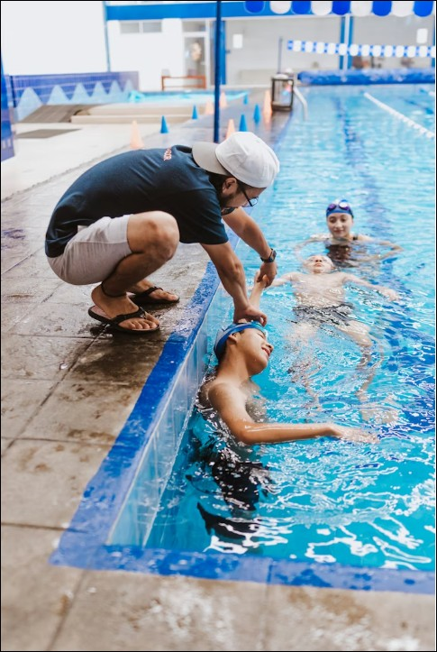

5 Best Ways to Find Swim Lessons Near You (2026)
Drowning is the #1 cause of unintentional death for children ages 1 to 4 in the United States. Formal swim lessons reduce that risk by 88%. This guide compares the best resources for finding qualified swim instruction, whether you need a free program, a private instructor, or a structured curriculum for your child.

Our Top Picks at a Glance
We evaluated swim lesson resources on instructor certification standards, age range coverage, cost transparency, geographic reach, and parent accessibility. Here are the five best options for finding lessons in 2026.
| # | Resource | Best For | Why It Stands Out |
|---|---|---|---|
| 1 | FloatSwim Directory | Free nationwide search | 1,245+ providers across all 50 states, filterable by cost type. Free, low-cost, and paid programs in one place. |
| 2 | YMCA Swim Lessons | Families on a budget | Financial assistance available at most locations. Structured group lessons from 6 months through adult. 2,600+ facilities. |
| 3 | American Red Cross Learn-to-Swim | Standardized curriculum | Levels 1-6 with consistent quality. WSI-certified instructors. Widely available at partner pools nationwide. |
| 4 | Private Instructors (Lessons.com, Thumbtack) | One-on-one attention | Personalized instruction at your schedule. Best for anxious beginners, special needs, or accelerated learning. |
| 5 | City/County Recreation Centers | Affordable local option | Municipal pools with sliding-scale fees. Some offer free summer learn-to-swim programs for residents. |
How We Evaluated These Resources
We assessed each resource across six criteria that matter most to parents searching for safe, effective swim instruction.
- Instructor certification: Does the resource require or verify recognized credentials (WSI, USSSA, SAI, ISR)?
- Age range coverage: Are lessons available for infants, toddlers, school-age children, and adults?
- Lesson format: Group, private, or both? What student-to-instructor ratios are standard?
- Cost transparency: Are prices listed upfront? Is financial aid or free programming available?
- Geographic coverage: Is it available in your area, or limited to certain regions?
- Parent reviews: What do real families say about the experience and results?
Full Comparison Table
Side-by-side breakdown of each resource across the criteria that matter most.
| Feature | FloatSwim | YMCA | Red Cross | Private (Lessons.com) | Rec Centers |
|---|---|---|---|---|---|
| Type | Search directory | Lesson provider | Curriculum + provider | Instructor marketplace | Municipal provider |
| Cost to search | Free | Free | Free | Free to browse | Free |
| Lesson cost | Varies by provider | $50-$120/session | $50-$100/session | $30-$80/lesson | $25-$80/session |
| Financial aid | Lists free programs | Yes, most locations | Some partner pools | No | Often, for residents |
| Coverage | All 50 states | 2,600+ locations | Nationwide (partner pools) | Major metro areas | Your municipality |
| Certified instructors | Varies by provider | YMCA-certified | WSI-certified | Varies (check profiles) | Varies by city |
| Age range | All ages listed | 6 months - adult | 6 months - adult | All ages | Typically 3+ years |
| Private lessons | Filter available | Available at some | Some partner pools | Yes, primary format | Rarely |
| Group lessons | Filter available | Yes, primary format | Yes, primary format | Some instructors | Yes, primary format |
Detailed Look at Each Option
What each resource does well, where it falls short, and who should use it.
1. FloatSwim Directory
What Sets It Apart
FloatSwim is the only free directory focused exclusively on swim lesson providers across all 50 states. It aggregates 1,245+ programs and lets you filter by state, city, cost type (free, low-cost, scholarship, paid), and provider type. Unlike marketplace platforms, FloatSwim does not charge providers to be listed and does not take a cut of lesson fees.
Strengths
- Covers all 50 states with 1,245+ providers and growing
- Filters for free and low-cost programs, which other platforms often bury
- No registration required to search
- Includes YMCA, Red Cross, private, and municipal programs in one place
- Mission-driven, drowning prevention focus with safety resources alongside the directory
Limitations
- Does not verify instructor certifications directly
- Provider information is sourced from public data and may not always be current
- No online booking or scheduling built in
- Smaller database than Google Maps for some rural areas
2. YMCA Swim Lessons
What Sets It Apart
The YMCA is the largest community-based swim lesson provider in the United States, operating out of 2,600+ facilities. Most locations offer financial assistance programs, and their structured curriculum covers ages 6 months through adult. The Y's "Safety Around Water" program provides free water safety education in underserved communities.
Strengths
- Financial assistance available at most locations, including free programs for qualifying families
- Consistent curriculum developed with input from aquatics professionals
- Warm-water pools designed for young learners at many facilities
- Lessons start at 6 months with parent-child classes
- Community-based, with membership benefits beyond swim lessons
Limitations
- Class sizes can be large (6-8 students per instructor in some levels)
- Schedule availability varies by location and season
- Membership may be required at some branches, adding to total cost
- Quality can vary between individual locations and instructors
3. American Red Cross Learn-to-Swim
What Sets It Apart
The Red Cross Learn-to-Swim program is the most widely recognized swim curriculum in the country. Its six-level progression (from water acclimation through stroke refinement) provides a clear skill roadmap. All instructors hold Water Safety Instructor (WSI) certification, one of the most rigorous credentials in aquatic education.
Strengths
- WSI certification is required for all instructors, ensuring consistent quality
- Levels 1-6 give parents a clear picture of their child's progression
- Curriculum is updated regularly based on current aquatics research
- Widely available at partner pools, community centers, and private facilities
- Strong reputation and long track record in water safety education
Limitations
- Red Cross does not operate its own pools, so availability depends on local partners
- "Find a Course" tool can be difficult to navigate and may show outdated listings
- Less focus on infant survival skills compared to ISR-style programs
- Pricing is set by partner facilities, not by Red Cross, so costs vary
4. Private Instructors (Lessons.com, Thumbtack)
What Sets It Apart
Marketplace platforms like Lessons.com and Thumbtack connect families directly with local swim instructors. This is the best option for personalized instruction, flexible scheduling, and lessons at your own pool. Private lessons are particularly effective for children who are anxious around water, have special needs, or need to progress faster than a group class allows.
Strengths
- One-on-one instruction tailored to your child's pace and comfort level
- Flexible scheduling, including evenings and weekends
- Many instructors will teach at your home pool
- Instructor profiles typically include certifications, reviews, and experience
- Faster skill progression compared to group settings
Limitations
- Higher cost per lesson ($30-$80+ per session)
- Certification verification is your responsibility. Always ask to see credentials.
- Availability is concentrated in metro areas. Rural families may find fewer options.
- No standardized curriculum. Quality depends entirely on the individual instructor.
- No financial assistance programs
5. City and County Recreation Centers
What Sets It Apart
Municipal recreation departments are often the most affordable option for swim lessons. Many cities and counties operate pools with structured lesson programs at subsidized rates. Some offer free summer learn-to-swim initiatives, especially in communities with higher drowning rates. If you are a local resident, check your parks and recreation department first.
Strengths
- Often the lowest cost option, with sliding-scale fees for residents
- Free summer programs available in many cities
- Close to home, reducing travel time and barriers to attendance
- Some partner with Red Cross or YMCA for curriculum
- Community-centered, with connections to other family services
Limitations
- Programs are seasonal in many areas, with long waitlists in summer
- Instructor certification standards vary by municipality
- Class sizes can be large, especially in free programs
- Age minimums are often 3 or 4, leaving out infants and toddlers
- Quality and availability depend heavily on local funding
How to Choose the Right Option
The best resource depends on your child's age, your budget, and what matters most to your family. Use these decision points to narrow it down.
Private vs. Group Lessons
- Choose private if your child is anxious around water, has special needs, or needs to learn quickly before a trip or move.
- Choose group if your child is social, you want a more affordable option, or your child is already comfortable in the water and ready for structured progression.
- Consider both: Many families start private to build confidence, then transition to group classes for continued development.
What Age Should My Child Start?
- The American Academy of Pediatrics supports lessons starting at age 1 (updated 2024 guidance).
- Survival-focused programs (ISR) accept infants as young as 6 months.
- Children ages 1-4 are at the highest drowning risk. Starting early matters.
- It is never too late. Adults who cannot swim should also take lessons.
How to Verify Instructor Certifications
- Ask directly. A qualified instructor will gladly share their credentials.
- Look for: WSI (Red Cross), USSSA, Starfish Aquatics Institute (SAI), or ISR certification.
- Verify CPR/First Aid is current, not expired.
- Check references. Ask other parents about their experience.
- Be cautious of instructors who cannot name their certifying organization.
Finding Free or Low-Cost Lessons
- FloatSwim Directory: Filter by "Free" or "Low cost" to find subsidized programs near you.
- YMCA: Ask about financial assistance at your local branch.
- Recreation centers: Check your city's parks department for summer programs.
- Nonprofits: Organizations like the ZAC Foundation, Make a Splash, and SwimStrong Foundation offer free lessons in select areas.
Frequently Asked Questions
Answers to the most common questions parents ask about finding swim lessons.
What age should kids start swim lessons?
The American Academy of Pediatrics (AAP) supports swim lessons for children starting at age 1, based on their 2024 updated guidance. Some survival-focused programs like ISR (Infant Swimming Resource) accept infants as young as 6 months. Children ages 1 to 4 are at the highest risk of drowning, and research from the National Institutes of Health shows that formal swim lessons can reduce drowning risk by 88% in that age group. Consult your pediatrician for advice specific to your child.
How much do swim lessons cost?
Costs vary widely by format and provider. Group lessons at a YMCA or recreation center typically run $50 to $120 for a multi-week session (4-8 classes). Private one-on-one lessons range from $30 to $80 per session. Some organizations offer free or scholarship-based programs. Use the FloatSwim directory to filter by cost type and find free and low-cost options near you.
What certifications should a swim instructor have?
Look for instructors certified by recognized organizations: Water Safety Instructor (WSI) from the American Red Cross, certifications from the United States Swim School Association (USSSA), or Starfish Aquatics Institute (SAI). Instructors should also hold current CPR and First Aid certifications. For infant-specific lessons, ISR (Infant Swimming Resource) certification is the gold standard for survival swim training.
Are private swim lessons better than group lessons?
It depends on your child's needs. Private lessons offer one-on-one attention, faster skill progression, and flexible scheduling, making them ideal for anxious beginners, children with special needs, or anyone who needs focused instruction. Group lessons cost less, help children learn social water skills, and work well for kids who are motivated by peers. Many families start with private lessons and transition to group sessions once basic skills are established.
Start Your Search
Every child deserves the chance to learn water safety. Start by searching for swim lesson providers in your area.